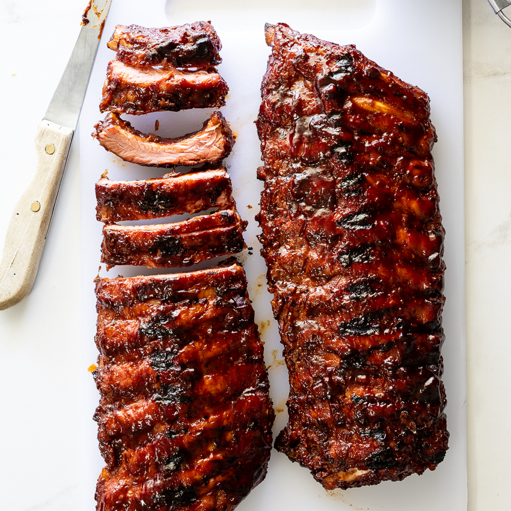

Ribs

This is my favorite way to prepare some tasty babyback ribs!
Ingredients
- Fresh Pork Baby Back Ribs
- Olive Oil
- Sweet Heat Rub (or dry rub of your choice)
- Brown Sugar
- Squeezable Honey
- Butter
- BBQ Sauce (optional)
Steps
- Remove the membrane from the ribs (use paper towel to get a better grip).
- Apply the rub and let the ribs sit out while setting the smoker to 250 degrees.
- After about 15 minutes or so after applying the rub, place ribs on smoker meat side up.
- After around 2 hours, take ribs off the smoker.
- On some aluminum foil, apply some brown sugar, honey, and butter before placing the ribs meat side down on the aluminum foil.
- Put ribs (in the aluminum foil) meat down on the grill and let smoke for 2-2.5 hours.
- Take off the grill and let sit for around 30 minutes then enjoy!